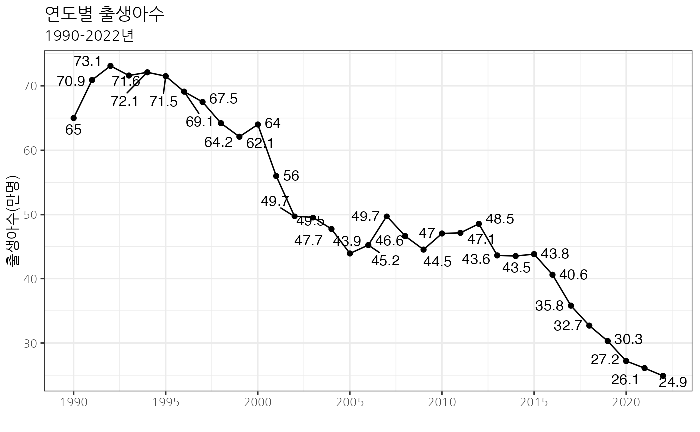

통계청에서 제공하는 1990-2022년 시도별 인구동태건수 및 동태율(출생,사망,혼인,이혼). 이용허락범위 제한없음.
양식
A data frame with 13 variables.
- 행정구역별
인구조사 행정구역
- 시점
통계 조사 시점(연)
- 출생건수_명
임신주수와 관계없이 태아가 모체로부터 완전히 배출/만출한 것으로, 탯줄의 절단, 태반의 분리와 관계없이 모체로부터 분리후 생명의 증거(호흡, 심장/제대의 박동, 수의근의 명백한 움직임 등)가 있는 경우
- 합계출산율
한 여자가 평생동안 평균 몇 명의 자녀를 낳는가를 나타내며, 출산력 수준비교를 위해 대표적으로 활용되는 지표로서 연령별 출산율(ASFR)의 총합
- 조출생율_천명당
특정 인구집단의 출산수준을 나타내는 기본적인 지표로서 1년간의 총출생아 수를 당해연도의 연앙인구로 나눈 수치를 1,000분비로 나타낸 것
- 사망건수_명
출생후 생명의 증거(호흡, 심장/제대의 박동, 수의근의 명백한 움직임 등)가 영구적으로 전혀 나타나지 않는 경우. 즉, 인공호흡의 가능성도 없는 출산후에 나타나는 생명력의 정지상태
- 조사망률_천명당
한 인구집단의 사망수준을 나타내는 기본적인 지표로서 특정연도의 연간 사망자수를 당해연도의 연앙인구로 나눈 수치를 1,000분비로 나타낸 것
- 자연증가건수_명
출생아수에서 사망자수를 뺀 값
- 자연증가율_천명당
자연증가건수를 1,000분비로 나타낸 것
- 혼인건수_건
남편(부)과 아내(처)로 구성된 법적관계임. 법률혼주의 원칙에서 혼인신고수리의 경우와 직권에 의해 가족관계등록부기재에 의한 신고로 이뤄짐(단, 신고에 의한 것이므로 혼전 동거,별거 등 사실혼과는 차이가 있을 수 있음)
- 조혼인율_천명당
1년간 신고된 총 혼인건수를 당해연도의 연앙인구로 나눈 수치를 1,000분비로 나타낸 것
- 이혼건수_건
법률혼주의 원칙에서 이혼신고 수리에 의한 신고와 재판이혼(조정,심판 혹은 판결)의 경우는 직권에 의해서 가족관계등록부기재에 의한 신고로 이루어짐
- 조이혼율_천명당
1년간 신고된 총 이혼건수를 당해연도의 연앙인구로 나눈 수치를 1,000분비로 나타낸 것
예시 코드
DT::datatable(head(birthRate))
library(ggplot2)
library(dplyr)
#>
#> 다음의 패키지를 부착합니다: ‘dplyr’
#> The following objects are masked from ‘package:stats’:
#>
#> filter, lag
#> The following objects are masked from ‘package:base’:
#>
#> intersect, setdiff, setequal, union
birthRate %>%
group_by(시점) %>%
summarise(출생 = sum(출생건수_명, na.rm = TRUE)) %>%
mutate(출생 = round(출생/10000, 1)) %>%
ggplot(aes(시점, 출생)) +
geom_line() + geom_point() +
ggrepel::geom_text_repel(aes(label = 출생), vjust = -0.5) +
theme_bw(base_family = "NanumGothic") +
scale_x_continuous(breaks = seq(1990, 2024, by = 5)) +
labs(title = "연도별 출생아수", subtitle = "1990-2022년", x = "", y = "출생아수(만명)")
